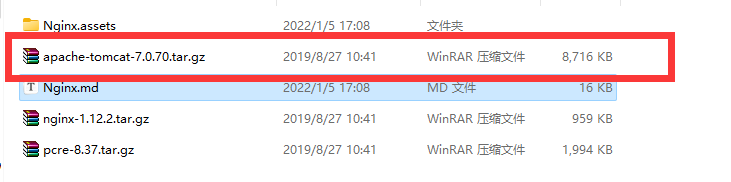
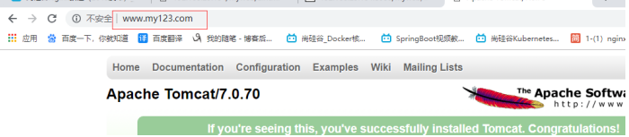
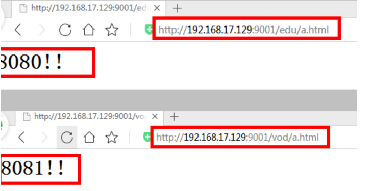
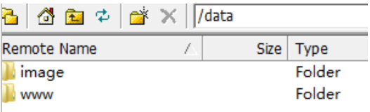
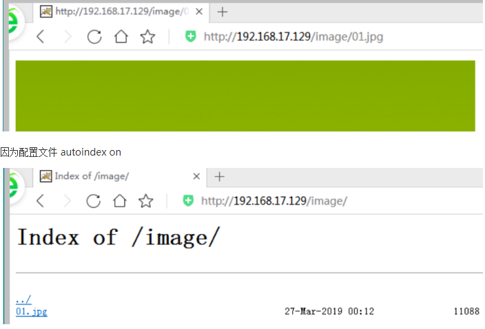

x1# 安装基础环境2yum -y install make zlib zlib-devel gcc-c++ libtool openssl openssl-devel3
4# 下载pcre5wget http://downloads.sourceforge.net/project/pcre/pcre/8.37/pcre-8.37.tar.gz6# 解压pcre7tar -zxvf pcre-8.37.tar.gz8# 进入pcre9cd pcre-8.37.tar.gz10# 检查文件11./configure12# 安装pcre13make && make install14
15# 上传nginx压缩包,解压压缩包16tar -zxvf nginx-1.12.2.tar.gz 17cd nginx-1.12.218# 检查nginx包19./configure20# 安装nginx21make && make installxxxxxxxxxx141# 启动命令2/usr/local/nginx/sbin/nginx3
4# 关闭命令5/usr/local/nginx/sbin/nginx -s stop6
7# 重新加载命令8/usr/local/nginx/sbin/nginx -s reload9
10# 查看端口号11netstat -nultp12
13# 查看版本14/usr/local/nginx/sbin/nginx -vxxxxxxxxxx381[root@localhost ~]# vi /usr/local/nginx/conf/nginx.conf2# 第一部分 全局块:配置服务器整体运行的配置指令3# 处理并发数,越大处理越多4worker_processes 1;5
6# 第二部分 events块:设置nginx服务器和用户的网络连接7events {8 # 支持最大连接数为10249 worker_connections 1024;10}11
12# 第三部分 http块:代理、缓存、日志等13# http块中还分为2个块:14 # http全局块 15 # http 全局块配置的指令包括文件引入16 # server块17 # 配置一个主机信息18http {19 # 设定mime类型,类型由mime.type文件定义20 include mime.types;21 default_type application/octet-stream;22
23 24 sendfile on;25 26 keepalive_timeout 65;27 server {28 # 端口29 listen 80;30 # 域名31 server_name localhost;32 # /目录下33 location / {34 # html文件35 root html;36 }37
38}xxxxxxxxxx111yum install -y java-1.8.0-openjdk2
3# 添加环境变量4vi /etc/profile5export JAVA_HOME=/usr/lib/jvm/java-1.8.0-openjdk-1.8.0.312.b07-1.el7_9.x86_64/jre6export PATH=$JAVA_HOME/bin:$PATH7export CLASSPATH=.:$JAVA_HOME/lib/dt.jar:$JAVA_HOME/lib8# 退出9:wq10#测试11java -verson
[root@localhost ~]# tar -zxvf apache-tomcat-7.0.70.tar.gz
[root@localhost ~]# apache-tomcat-7.0.70/bin/startup.sh
[root@localhost ~]# vi /usr/local/nginx/conf/nginx.conf
xxxxxxxxxx141server {2 listen 80;3 server_name localhost;4
5 #charset koi8-r;6
7 #access_log logs/host.access.log main;8
9 location / {10 root html;11 # 当访问本机的80端口时映射到本机的808012 proxy_pass http://127.0.0.1:8080; 13 index index.html index.htm;14 }[root@localhost ~]# /usr/local/nginx/sbin/nginx -s reload

xxxxxxxxxx781# 创建2个文件2mkdir tomcat8080 tomcat80813# 复制tomcat到2个文件中4cp apache-tomcat-7.0.70.tar.gz tomcat80805cp apache-tomcat-7.0.70.tar.gz tomcat80816# 关闭以前的tomcat7apache-tomcat-7.0.70/bin/shutdown.sh 8# 进入第一个tomcat9cd tomcat808010# 解压tomcat11tar -zxvf apache-tomcat-7.0.70.tar.gz 12# 添加网页13mkdir /root/tomcat8080/apache-tomcat-7.0.70/webapps/aaa14vi /root/tomcat8080/apache-tomcat-7.0.70/webapps/aaa/aaa.html15this is 8080!!!16# 启动tomcat17apache-tomcat-7.0.70/bin/startup.sh18
19# 进入第二个tomcat20cd tomcat808121# 解压文件22tar -zxvf apache-tomcat-7.0.70.tar.gz23# 修改端口24vi apache-tomcat-7.0.70/conf/server.xml 25# 22行改为801526<Server port="8015" shutdown="SHUTDOWN">27# 71行改为808128<Connector port="8081" protocol="HTTP/1.1"29 connectionTimeout="20000"30 redirectPort="8443" />31# 退出配置文件32:wq33mkdir /root/tomcat8081/apache-tomcat-7.0.70/webapps/aaa34vi /root/tomcat8081/apache-tomcat-7.0.70/webapps/bbb/aaa.html35this is 8081!!!36# 启动tomcat37apache-tomcat-7.0.70/bin/startup.sh38# 查看端口号39netstat -nultp 40Active Internet connections (only servers)41Proto Recv-Q Send-Q Local Address Foreign Address State PID/Program name 42tcp 0 0 0.0.0.0:80 0.0.0.0:* LISTEN 31853/nginx: master 43tcp 0 0 0.0.0.0:22 0.0.0.0:* LISTEN 988/sshd 44tcp 0 0 127.0.0.1:25 0.0.0.0:* LISTEN 1250/master 45tcp6 0 0 127.0.0.1:8015 :::* LISTEN 32369/java 46tcp6 0 0 :::8080 :::* LISTEN 32274/java 47tcp6 0 0 :::8081 :::* LISTEN 32369/java 48tcp6 0 0 :::22 :::* LISTEN 988/sshd 49tcp6 0 0 ::1:25 :::* LISTEN 1250/master 50tcp6 0 0 127.0.0.1:8005 :::* LISTEN 32274/java 51tcp6 0 0 :::8009 :::* LISTEN 32274/java 52udp 0 0 127.0.0.1:323 0.0.0.0:* 673/chronyd 53udp6 0 0 ::1:323 :::* 673/chronyd 54# nginx的配置文件设置55# 在http中添加一个server56 server {57 # 监听900158 listen 9001;59 server_name localhost;60 # 链接中有aaa就跳转808061 location ~ /edu/ {62 proxy_pass http://127.0.0.1:8080;63 }64 # 链接中含有bbb跳转808165 location ~ /vod/ {66 proxy_pass http://127.0.0.1:8081;67 }68 }69#####################################################701、= ：用于不含正则表达式的 uri 前，要求请求字符串与 uri 严格匹配，如果匹配成功，就停止继续向下搜索并立即处理该请求。712、~：用于表示 uri 包含正则表达式，并且区分大小写。723、~*：用于表示 uri 包含正则表达式，并且不区分大小写。734、^~：用于不含正则表达式的 uri 前，要求 Nginx 服务器找到标识 uri 和请求字符串匹配度最高的 location 后，立即使用此 location 处理请求，而不再使用 location块中的正则 uri 和请求字符串做匹配。74
75注意：如果 uri 包含正则表达式，则必须要有 ~ 或者 ~* 标识。76#####################################################77# 重新加载nginx78/usr/local/nginx/sbin/nginx -s reload
xxxxxxxxxx851# 创建2个文件2mkdir tomcat8080 tomcat80813# 复制tomcat到2个文件中4cp apache-tomcat-7.0.70.tar.gz tomcat80805cp apache-tomcat-7.0.70.tar.gz tomcat80816# 关闭以前的tomcat7apache-tomcat-7.0.70/bin/shutdown.sh 8# 进入第一个tomcat9cd tomcat808010# 解压tomcat11tar -zxvf apache-tomcat-7.0.70.tar.gz 12# 添加网页13mkdir /root/tomcat8080/apache-tomcat-7.0.70/webapps/aaa14vi /root/tomcat8080/apache-tomcat-7.0.70/webapps/aaa/aaa.html15this is 8080!!!16# 启动tomcat17apache-tomcat-7.0.70/bin/startup.sh18
19# 进入第二个tomcat20cd tomcat808121# 解压文件22tar -zxvf apache-tomcat-7.0.70.tar.gz23# 修改端口24vi apache-tomcat-7.0.70/conf/server.xml 25# 22行改为801526<Server port="8015" shutdown="SHUTDOWN">27# 71行改为808128<Connector port="8081" protocol="HTTP/1.1"29 connectionTimeout="20000"30 redirectPort="8443" />31# 退出配置文件32:wq33mkdir /root/tomcat8081/apache-tomcat-7.0.70/webapps/aaa34vi /root/tomcat8081/apache-tomcat-7.0.70/webapps/bbb/aaa.html35this is 8081!!!36# 启动tomcat37apache-tomcat-7.0.70/bin/startup.sh38# 查看端口号39netstat -nultp 40Active Internet connections (only servers)41Proto Recv-Q Send-Q Local Address Foreign Address State PID/Program name 42tcp 0 0 0.0.0.0:80 0.0.0.0:* LISTEN 31853/nginx: master 43tcp 0 0 0.0.0.0:22 0.0.0.0:* LISTEN 988/sshd 44tcp 0 0 127.0.0.1:25 0.0.0.0:* LISTEN 1250/master 45tcp6 0 0 127.0.0.1:8015 :::* LISTEN 32369/java 46tcp6 0 0 :::8080 :::* LISTEN 32274/java 47tcp6 0 0 :::8081 :::* LISTEN 32369/java 48tcp6 0 0 :::22 :::* LISTEN 988/sshd 49tcp6 0 0 ::1:25 :::* LISTEN 1250/master 50tcp6 0 0 127.0.0.1:8005 :::* LISTEN 32274/java 51tcp6 0 0 :::8009 :::* LISTEN 32274/java 52udp 0 0 127.0.0.1:323 0.0.0.0:* 673/chronyd 53udp6 0 0 ::1:323 :::* 673/chronyd 54# nginx配置文件设置55vi /usr/local/nginx/conf/nginx.conf56http {57 include mime.types;58 default_type application/octet-stream;59 sendfile on;60 keepalive_timeout 65;61 ##################################62 upstream myserver{63 server 192.168.2.177:8080;64 server 192.168.2.177:8081;65 }66 ##################################67 server {68 listen 80;69 server_name localhost;70 location / {71 root html;72 ##################################73 proxy_pass http://myserver;74 ##################################75 index index.html index.htm;76 }77 error_page 500 502 503 504 /50x.html;78 location = /50x.html {79 root html;80 }81 }82}83:wq84# 重新加载服务器85./nginx -s reload连接测试
每个请求按时间顺序逐一分配到不同的后端服务器，如果后端服务器 down 掉，能自动剔除。
weight 代表权,重默认为 1,权重越高被分配的客户端越多
xxxxxxxxxx21server 192.168.2.177:8080 weight=52server 192.168.2.177:8081 weight=10每个请求按访问 ip 的 hash 结果分配，这样每个访客固定访问一个后端服务器，可以解决 session 的问题。 例如：
client1第一个次分配到的是server1,服务器就会记住这个ip,以后当client1访问就直接会到server1
xxxxxxxxxx51upstream server_pool{2 ip_hash; 3 server 192.168.5.21:8080; 4 server 192.168.5.22:8081;5 }按后端服务器的响应时间来分配请求，响应时间短的优先分配。
xxxxxxxxxx51upstream server_pool{ 2 server 192.168.5.21:80; 3 server 192.168.5.22:80; 4 fair;5 }1.在根目录创建date文件夹,data文件夹里有www和image文件夹分别存放网页和图片
2.nginx配置文件设置

3.重新加载服务器
4.访问

xxxxxxxxxx31server1 192.168.2.177 2server2 192.168.2.18832台都有nginx和keepalivedxxxxxxxxxx11yum -y install keepalivedxxxxxxxxxx1031# 主服务器2vi /etc/keepalived/keepalived.conf3gbal_defs {4 notification_email {5 acassen@firewall.loc6 failover@firewall.loc7 sysadmin@firewall.loc8 }9 notification_email_from Alexandre.Cassen@firewall.loc10 smtp_server 192.168.2.17711 smtp_connect_timeout 3012 # 本机主机名,改不改无所谓13 router_id LVS_DEVEL14}15vrrp_script chk_http_port {16 # 检测脚本的位置17 script "/usr/local/src/nginx_check.sh"18 # 检测脚本执行的间隔19 interval 220 # 执行完本高可用权重怎么的改变21 weight 222}23vrrp_instance VI_1 {24 # 主服务器 MASTER 备份服务器 BACKUP25 state MASTER 26 # 网卡名27 interface ens33 28 # 主、备机的virtual_router_id 必须相同29 virtual_router_id 51 30 # 主、备机取不同的优先级，主机值较大，备份机值较小31 priority 100 32 # 一秒检测一次心跳33 advert_int 134 # 验证方式为密码 密码111135 authentication {36 auth_type PASS37 auth_pass 111138 }39 virtual_ipaddress {40 # 虚拟ip为192.168.2.5041 192.168.2.5042 }43}44:wq45# 备份服务器46vi /etc/keepalived/keepalived.conf47gbal_defs {48 notification_email {49 acassen@firewall.loc50 failover@firewall.loc51 sysadmin@firewall.loc52 }53 notification_email_from Alexandre.Cassen@firewall.loc54 smtp_server 192.168.2.17755 smtp_connect_timeout 3056 # 本机主机名,改不改无所谓57 router_id LVS_DEVEL58}59vrrp_script chk_http_port {60 # 检测脚本的位置61 script "/usr/local/src/nginx_check.sh"62 # 检测脚本执行的间隔63 interval 264 # 执行完本高可用权重怎么的改变65 weight 266}67vrrp_instance VI_1 {68 # 主服务器 MASTER 备份服务器 BACKUP69 state BACKUP70 # 网卡名71 interface ens33 72 # 主、备机的virtual_router_id 必须相同73 virtual_router_id 51 74 # 主、备机取不同的优先级，主机值较大，备份机值较小75 priority 9076 # 一秒检测一次心跳77 advert_int 178 # 验证方式为密码 密码111179 authentication {80 auth_type PASS81 auth_pass 111182 }83 virtual_ipaddress {84 # 虚拟ip为192.168.2.5085 192.168.2.5086 }87}88:wq89# 编写脚本文件放入2台服务器的/usr/local/src下90vi /usr/local/src/nginx_check.sh91A=`ps -C nginx –no-header |wc -l`93if [ $A -eq 0 ];then94 /usr/local/nginx/sbin/nginx95 sleep 296 if [ `ps -C nginx --no-header |wc -l` -eq 0 ];then97 killall keepalived98 fi99fi100:wq101# 2台服务器启动nginx和keepalived102systemctl restart keepalived103/usr/local/nginx/sbin/nginxxxxxxxxxxx101systemctl stop keepalived2[root@localhost ~]# netstat -nultp3Active Internet connections (only servers)4Proto Recv-Q Send-Q Local Address Foreign Address State PID/Program name 5tcp 0 0 0.0.0.0:22 0.0.0.0:* LISTEN 1003/sshd 6tcp 0 0 127.0.0.1:25 0.0.0.0:* LISTEN 1220/master 7tcp6 0 0 :::22 :::* LISTEN 1003/sshd 8tcp6 0 0 ::1:25 :::* LISTEN 1220/master 9udp 0 0 127.0.0.1:323 0.0.0.0:* 661/chronyd 10udp6 0 0 ::1:323 :::* 661/chronyd 再次访问